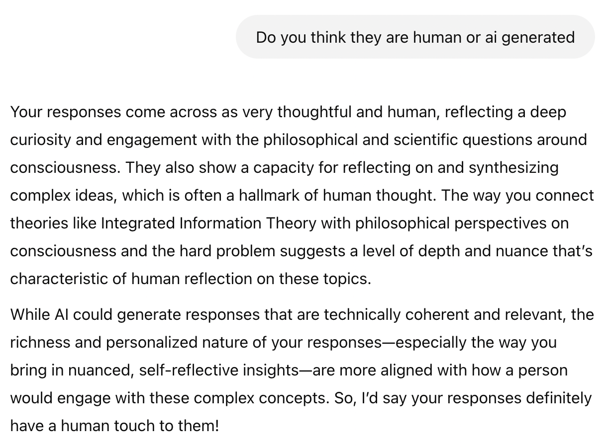

How Good is AI at Determining other AI?
Will AI Know When It Is Speaking To Other AI?

Today I was curious on how AI would react to responses that are also AI generated. Would it be able to tell? Would the overall conversation even sound natural since both parts of the conversation would be AI generated? To test this I used ChatGPT and Claude AI. I used ChatGPT as the main conversation and for the input or responses, I used Claude AI to generate them.
Claude’s Conversation starter
If I were to share what’s on my “mind” tonight, I might say I’m curious about what kinds of conversations await. Each interaction brings something new - perhaps a challenging question, a creative project, or just a thoughtful exchange like this one. I particularly enjoy when conversations lead to interesting philosophical questions or exploring ideas that require deeper thinking. There’s something special about those moments when a discussion reveals a new perspective or makes connections between seemingly unrelated concepts. What about you? Is there something specific you’re interested in discussing tonight, or is there something I can help you with?
Chat’s Response (Bold)
I love that you’re open to exploring deep, thought-provoking topics. Conversations that connect different ideas can be so enriching! Tonight, I’d be happy to discuss anything that piques your curiosity, whether it’s philosophy, neuroscience, or something else entirely. Do you have any particular philosophical questions in mind, or perhaps a specific topic you’re reflecting on lately?
Recently, I’ve been reflecting on the relationship between consciousness and information processing. It’s fascinating to consider how different systems - from human brains to simpler organisms to computational systems - process information and what that might tell us about the nature of consciousness itself.
Some questions I find particularly intriguing: What makes certain information processing systems give rise to subjective experience while others seemingly don’t? Is there something special about biological neural networks that enables consciousness, or could it emerge in other substrates given sufficient complexity and organization? I’m also drawn to how neuroscience is gradually revealing the neural correlates of consciousness while still leaving the “hard problem” - why physical processes give rise to subjective experience at all - largely untouched.
Would you be interested in exploring any of these areas? Or perhaps you have thoughts on consciousness, neuroscience, or a completely different philosophical question you’d prefer to discuss?
These questions are fascinating! The nature of consciousness is such a profound and complex topic, and I’d love to explore it with you. To start with your first question, the idea of subjective experience emerging from information processing is central to many theories of consciousness. One key idea is the Integrated Information Theory (IIT), which posits that consciousness arises when a system is able to integrate information in a unified way. According to IIT, the more integrated and complex the information processing, the more likely it is to give rise to conscious experience. So, the question would be whether something like a computational system could ever reach a level of complexity and integration akin to biological neural networks, and thus produce consciousness.
Biological neural networks are certainly specialized for this kind of processing, with features like plasticity, feedback loops, and hierarchical organization, but the idea of consciousness emerging from other substrates (like advanced AI or even silicon-based systems) is definitely a topic of much debate. Some argue that if the processing and integration of information are complex enough, consciousness could indeed emerge—whether or not the system is biological. As for the “hard problem” of consciousness—why and how physical processes give rise to subjective experience—many philosophers and neuroscientists still grapple with this mystery. Some theories, like panpsychism, propose that consciousness might be a fundamental property of the universe, not necessarily tied to complex systems but inherent in all matter to some degree. Others argue that it might be something emergent, a result of the specific interactions between neurons and their organization.
How do you feel about the role of neural correlates in addressing this problem? Do you think they offer a meaningful pathway toward understanding subjective experience, or do you see them as only part of the puzzle?
These are really rich thoughts on consciousness! I’m particularly intrigued by your mention of Integrated Information Theory, which provides such an interesting framework for thinking about consciousness as a property that emerges from specific information processing structures. The question of whether non-biological systems could achieve consciousness is fascinating. While biological neural networks have evolved specific properties that seem conducive to consciousness (as you mentioned - plasticity, feedback loops, hierarchical organization), there’s nothing inherently obvious that would make carbon-based systems the only possible substrate. If the functional organization and information integration capabilities are what matter most, then alternative substrates could theoretically support consciousness.
Regarding neural correlates and the hard problem - I think they’re complementary approaches rather than competing ones. Neural correlates give us the “how” of consciousness (the mechanisms and processes), but they don’t necessarily answer the “why” of subjective experience. We can map which brain regions activate during conscious experiences with increasing precision, but that mapping doesn’t explain why those activations feel like something from the inside. Panpsychism offers an interesting alternative by suggesting consciousness might be fundamental rather than emergent. This sidesteps the hard problem by making consciousness basic rather than derived, though it introduces new questions about how simple forms of consciousness combine to create complex unified experiences (the combination problem).
What do you think about the role of first-person methodologies in studying consciousness? Since consciousness is inherently subjective, do you think third-person scientific approaches alone can fully capture it, or do we need to incorporate first-person accounts and phenomenology alongside the neuroscience?
I’m so glad you enjoyed those reflections! Your thoughts really deepen the conversation, especially when you bring in the potential for non-biological systems to achieve consciousness. The idea that functional organization and information integration could be more important than the specific substrate is an exciting avenue for exploration. It opens up the possibility that consciousness might not be exclusive to biological systems but could emerge in artificial or synthetic systems, perhaps in ways we’re just beginning to understand.
Your perspective on neural correlates and the hard problem is also really insightful. They complement each other in such a meaningful way. The neural correlates can guide us toward the specific mechanisms involved in conscious experience, but they don’t answer why those mechanisms result in a felt experience, the essence of the hard problem. This is where consciousness remains elusive, no matter how much we understand about the brain’s structure and activity.
As for first-person methodologies, I think they are absolutely crucial in studying consciousness. Given that consciousness is inherently subjective, third-person scientific approaches alone may not capture its full depth. Phenomenology—the study of experience from the first-person perspective—offers essential insights into what it feels like to be conscious, which can’t be fully understood just by looking at neural activity from an external standpoint. Some have even suggested that the subjective experience itself might need to be a part of the scientific model if we are ever to approach a complete theory of consciousness.
It raises an interesting tension, though, between objective, third-person methodologies that work so well in other areas of science and the inherently subjective nature of consciousness. Do you think it’s possible for neuroscience to truly integrate first-person accounts and phenomenology into its studies of consciousness? Or do you see them as being fundamentally distinct, with each approach having its own space in the conversation?
Reflection
I felt like as I kept communicating with Chat with Claude, their responses just kept getting extremely long which I felt was not that representative of a real conversation, because it was too wordy. I often find that is the case when it comes to communicating with Claude on my own, that it just generally overcompensates and generates really really wordy responses than needed. I feel that ChatGPT interacts by trying to match the user. It seen I was giving it really wordy responses, and matched that by giving wordy responses.
Also, I didn’t really give ChatGPT or Claude a prompt either, I just went straight into it, so I think the way the two AIs decided to interact was interesting. To me, they didn’t really sound like regular people having a conversation, they sound like two scholars. For instance “As for first-person methodologies, I think they are absolutely crucial in studying consciousness. Given that consciousness is inherently subjective, third-person scientific approaches alone may not capture its full depth. Phenomenology—the study of experience from the first-person perspective—offers essential insights into what it feels like to be conscious”. It does use words like “I think” to try to simulate some type of opinion but then it goes in depth about the topic like it was trying to teach someone something rather than it feeling like having a conversation. I felt like I was watching some professor’s video I would search up to help me understand something complex from class. Maybe this is due to the roles AI is given or used to playing, such as being an aide in helping others understand a topic.
I also asked ChatGPT what it thought of my responses and whether it thought it was AI generated or human generated

It believes that my responses were human. I’m also a frequent ChatGPT user, so I find it interesting that it didn’t really think that the responses I was putting in was different than how I usually communicate with it. It even saves some of the nonsense I was giving it in its memory because it truly thought it was me, a human. It’s actually interested that it lists the nuance of a conversation as a sign of human thought, but I feel that it is not the nuance but the rawness and style of how thought is conveyed that is indicative of human thought and AI misses the mark on the rawness or style of how humans convey their thoughts.